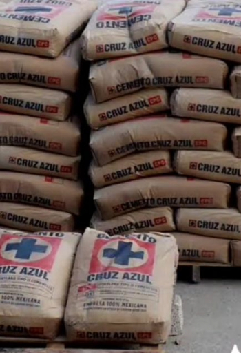
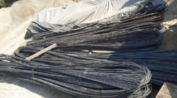
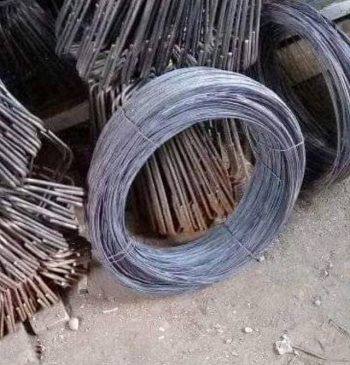
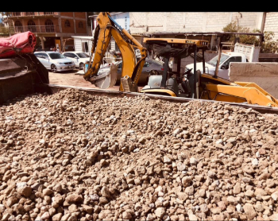
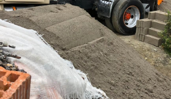
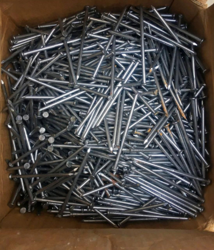

CEMENTO
El cemento es un material inorgánico de gran importancia en la construcción, ya que se utiliza para cohesionar, fijar o cubrir pisos y paredes. Sin duda alguna, es el material de construcción más empleado, ya que es indispensable tanto en pequeñas reformas como así también en grandes edificaciones.
VARILLA
El cemento es un material inorgánico de gran importancia en la construcción, ya que se utiliza para cohesionar, fijar o cubrir pisos y paredes. Sin duda alguna, es el material de construcción más empleado, ya que es indispensable tanto en pequeñas reformas como así también en grandes edificaciones.
ALAMBRE
Es un hilo de acero que puede tener varios grosores dependiendo del uso que vaya a recibir. Se usa para sujetar una planta a un tutor o una verja a un poste entre otros. Cuanto mayor sea el peso que tiene que soportar mayor tiene que ser el diámetro del alambreS.
GRAVA
La grava son piedras pequeñas que se utilizan en el sector de la construcción para hacer concreto. Se trata de un agregado de tipo grueso (los finos son las arenas), cuyas funciones son: por un lado, facilitar la integración de los materiales, y por otro, dar consistencia y resistencia a las mezclas que forman.
ARENA
La arena para construcción es un agregado fino que se mezcla con cemento o mortero para elaborar concreto u hormigón y otros elementos de vital importancia como tabiques, blocks y adoquines. Como mencionamos anteriormente, existen diversos tipos de arena que se usan en el sector de la construcción.
CLAVOS
Los clavos son elementos de fijación metálica y su objetivo principal es fijar elementos de construcción. Se eligen según su uso, considerando: tipo de material, resistencia, cabeza, caña, material y dimensiones.
